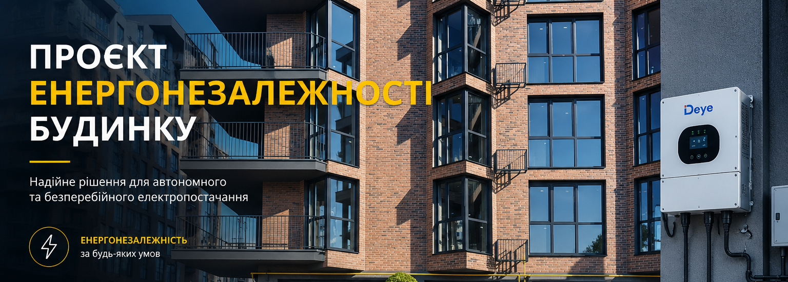

| Назва | Споживання | Пріоритет | Коментар |
|---|---|---|---|
| Водопостачання | < 3 кВт | Критичний |
Зараз у нас працює тимчасовий насос, після підключення до міських мереж будуть інші насоси.
Споживання вказано приблизно. Реальне споживання поки важко оцінити. |
| Домофон | < 0.09 кВт | Критичний | Підключений через PoE (технологія підтримує максимум 90Вт) |
| Ліфт |
Початок руху: ~11.2 кВт
Звичайний рух: ~9.2 кВт Очікування: ~0.3 кВт |
Критичний Високий |
Час руху з 1 по 9 поверх: ~30 сек
Час відкриття-закриття дверей: ~10-13 сек Теоретично ліфт може спожити ~7.5 кВт за годину (якщо постійно їздити між першим і 9 поверхом цілу годину, без простою), але таке малоймовірно. У нас всього 72 квартири, тому я не думаю що ліфт буде в русі більше 30% (~2.5 кВт)часу в години пік, і 15% (~1.2кВт) в звичайнні години. |
| Відеоспостереження | < 0.5 кВт | Високий | Приблизне споживання |
| Освітлення МЗК | < 0.5 кВт | Високий | Приблизне споживання |
| Шлагбаум | < 0.1 кВт | Високий | Можливо він підключенний через першу секцію |
| Вуличне освітлення | < 0.5 кВт | Низький | Поки немає |
| Розетка в холлі | <2кВт | Низький |
Для обмеження потужності (наприклад, 2кВт) можна використовувати автомат чи смарт-розетку.
Пропонується використовувати для підзарядки телефонів/павербанків/станцій. Можна використовувати тільки з генератором, так як він буде мати надлишкову потужність. |
| Загалом КритичнийВисокий |
~ 13 кВт | ||
| Загалом КритичнийВисокийНизький |
~ 15 кВт |
| Назва | Умови | Статус | Коментар |
|---|---|---|---|
| ГрінДІМ | Відшкодування 50-70% від вартості обладнання | Призупинена |
Посилання: https://eefund.org.ua/greendim/
Нові заявки не приймають з квітня 2026 року. Термін відновлення програми - невідомо. Минулого року заявки перестали приймати в березні 2025, а відновили аж в лютому 2026. |
| Револьверний фонд міст АЕМУ | Безвідсоткова позика на рік (до 500 тисяч) | Діючий |
Посилання: https://enefcities.org.ua/diyalnist/revolvernyy-fond-mist-aemu/
Обов'язкова умова участі: прийняття даної програми через Загальні збори |